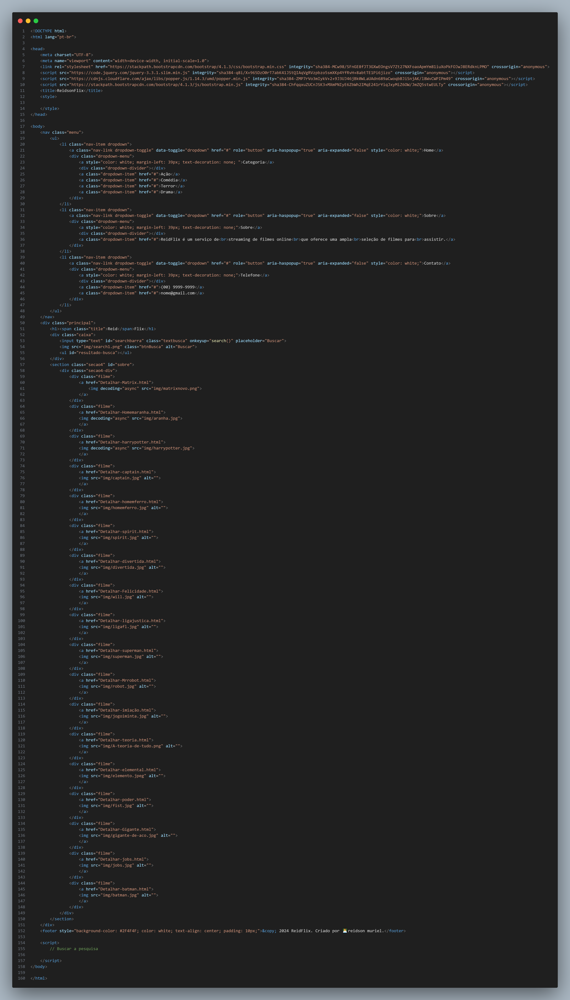

• HTML: Defina uma estrutura básica da página, utilizando tags semânticas e elementos como 'nav', 'div', 'section'e 'footer'. O HTML também organiza o conteúdo, como o título, a barra de navegação, e a lista de filmes.
• CSS: Estiliza a aparência da página.
• JavaScript: O JavaScript no projeto controla a barra de pesquisa e interações dinâmicas, como filtrar os filmes conforme o usuário digital na barra de busca. Ele utiliza uma função simples para ocultar ou mostrar os elementos com base no que o usuário está buscando.
Estrutura HTML
• NavBar : Um menu de navegação responsivo com opções como "Home", "Sobre" e "Contato". Essas opções são criadas com a ajuda de listas não ordenadas ( 'ul') e elementos 'li'.
• Seção de filmes : Uma grade flexível que organiza as pôsteres dos filmes em várias colunas. Cada filme é encapsulado em um 'div' com uma imagem ( 'img'), e os links apontam para páginas individuais de detalhes dos filmes.
• Background e cores : O fundo usa um gradiente linear em tons de preto e vermelho escuro, proporcionando um visual moderno e sonoro. Os textos são predominantemente brancos para criar um contraste forte.
• Animações : Há uma animação aplicada ao título "ReidFlix", que desliza suavemente de uma posição inicial para o centro da página.
• Responsividade : Através de consultas de mídia, a interface se adapta ao tamanho da tela. No caso de dispositivos móveis, a barra de navegação e o layout de filmes são reorganizados verticalmente para melhorar a usabilidade.
Essa função filtra os filmes ao comparar o texto digitado na barra de busca com o nome dos filmes.
O projeto é projetado para ser acessível em diferentes dispositivos, com diferentes resoluções de tela. Quando a tela é menor (por exemplo, em celulares), os filmes são apresentados em uma única coluna, e o layout da barra de navegação também é ajustado.
Este projeto serve como um ótimo exemplo de como criar uma página web interativa e visualmente atraente, usando apenas HTML, CSS e JavaScript. Além disso, demonstramos o uso de ferramentas modernas como o Bootstrap para agilizar a criação de componentes responsivos.